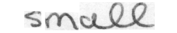
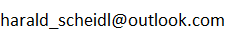

I'm working as a computer vision engineer and interested in computer vision, deep learning, Python, and C++.
This website is mostly about detecting and reading handwritten text. To see this in action, you can test a lightweight, quantized version of my handwritten text recognition model directly in your browser using the interactive demo below. Once the model has loaded, click any sample image to run inference locally on your CPU. (Interested how it works?)
Text reader demo

The website is organized into these three sections: Code, Publications and Articles.
If you want to contact me, you can reach out via LinkedIn
or via e-mail:
